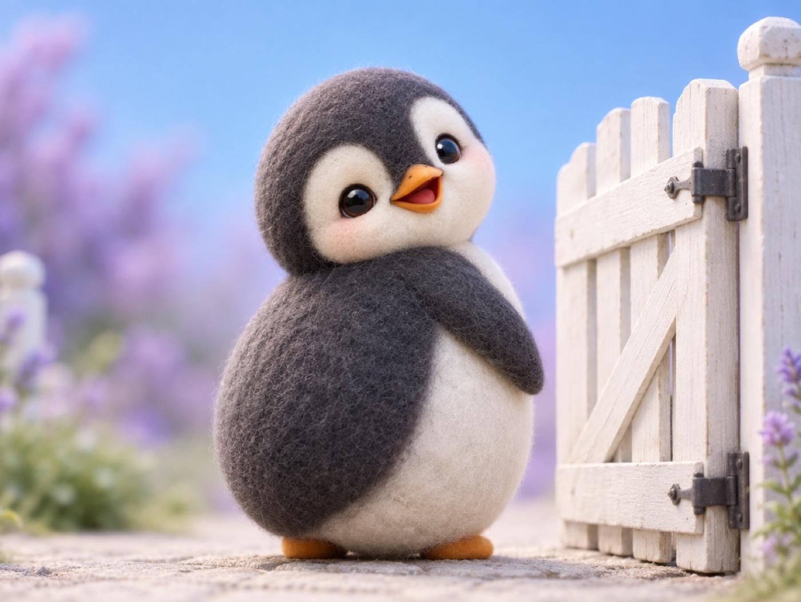

📝 DRAFT · 下書き — まだ本番に出していません · 下書き一覧
🐧 EVERYDAY LIFE⚡ 20 SEC
Keep your smile on until your eyes meet 👀

Keep Smiling
It seems that when you say hello, you should keep smiling until your eyes meet.
Looking Away
For example, what if someone says "Hello," but they are already looking away when you turn around?
A Little Lonely
The words are polite, but you feel a little lonely just because your eyes did not meet.
⚡ TRY IT
Hold that smile!
Hello! 😊
You
Neighbor
⚠️ Your smile is fading!
Tap fast to keep your smile up. Your neighbor will turn around soon.
Wait for your eyes to meet… 👀
💌 Your eyes met with a smile. Hello delivered!
😐 Your smile faded just before your eyes met. "Are they angry…?"
🔥 Streak: 0🏆 Best: 0
Smile Delivered
A hello lasts until your smile reaches the other person.
📚 I learned this from the Japanese blog "Panda no Ondo".